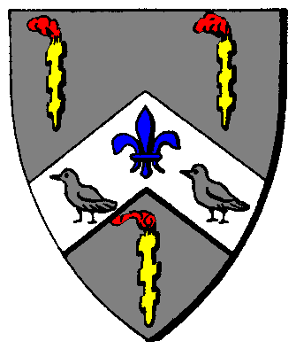

| Übersicht,
Anschläge und Stammtisch (RPG) |
|
Skelettis
|
| Nasgul (RIP) |
Da ich meine Krieger nun auch ein wenig die eingerosteten Knochen und die Rostigen Waffen verwenden lassen möchte und nicht immer Steine hin und her zu schleppen suche ich ein paar Knochenhaufen die ich zerschlagen könnte bitte.
Nasgul,
Priester im Dienste des einzig wahren Glaubens an Pheron
Zur 9. Stunde am 85.Saatmond im Jahre 431 |
14.11.07 22:28
 |
|
Luzi ni Mur
  |
Wie wärs alternativ mit Sandburgen? *frechgrinst*
Luzi ni Mur,
Anführerin der glorreichen Nation "Breariach",
Valendors wandelnde Flohherberge
Zur 22. Stunde am 86.Saatmond im Jahre 431 |
15.11.07 6:57
|
|
| Agrippa de Arsakes (RIP) |
*Bierfass anroll*
Markgräfin Agrippa Selachii,
Vorsteherin von Meresin,
Kardinälin im Dienste des einzig wahren Glaubens an Pheron,
Ehefrau des ehrenwerten Sam Selachii
Zur 5. Stunde am 87.Saatmond im Jahre 431 |
15.11.07 8:36
|
|
| Thorben von Sarkem (RIP) |
Ich hab Bier gehört?
Thorben von Sarkem,
Priester im Dienste des einzig wahren Glaubens an Wendaria,
Clanlord der Omin Tarkun
Zur 6. Stunde am 87.Saatmond im Jahre 431 |
15.11.07 8:58
|
|
| Elijah (RIP) |
*bringt einlig einen Zapfhahn und einen Schlägel*
O Zapft Is !!!
Sir Elijah,
Vorsteher von Tortuga,
Priester im Dienste des einzig wahren Glaubens an Tura,
Anführer der glorreichen Nation "Die Fraggles"
Zur 16. Stunde am 87.Saatmond im Jahre 431 |
15.11.07 11:18
|
|
Frathag Graubart
  |
damit dem Herren auch mal geholfen wird, soll es nicht auf Kyll ein Nest geben, wo es immer Nachschub an Skeletten gibt? Da kann sich der Pheron-Priester doch bestimmt austoben.
Baron Bruder Frathag Graubart,
Vorsteher von Bel en Orod
Zur 3. Stunde am 88.Saatmond im Jahre 431 |
15.11.07 13:48
|
|
Morgan Muirgius
 |
Bei der schönen Stadt Caligomagus gibt es auch eine Skelettburg. Die Untoten Knochengerippe sind dort sogar sehr aktiv. Der einzige Nachteil: es liegt jenseits des Flusses, so dass Ihr eine Schifffahrt mit einplanen müsstet.
Pfalzgraf Morgan Muirgius,
Vorsteher von Caligobaca
Zur 3. Stunde am 88.Saatmond im Jahre 431 |
15.11.07 13:53
|
|
| Kage Hitomi (RIP) |
Ja, Kyll ist wohl ein guter Anlaufpunkt.
2 gute Gasthäuser mit fleißigen Wirten und sauberen Unterkünften stehen anbei und das Nest ist westlich Dîn Ildîrián´s und nördlich von Steinbrück in dem Gebirgszug nahe der Küste.
Freiherr Kage Hitomi,
Vorsteher von Dîn Aderthaîd,
Konsul der Republik der Stille
Zur 16. Stunde am 88.Saatmond im Jahre 431 |
15.11.07 16:49
|
|
Galaton Dragus
  |
Kage ..wenn Du glaubst, Du bekommst dadurch in den Gasthäusern irgendwie Rabatt und Frei-Rum haste Dich geschnitten, dank Dir werden die beiden Wirte wohl nie wieder Urlaub machen können weil permanent irgendwelche daueralkoholisierten Halblinge und randalierende Zwerge da einziehen!
König Galaton Dragus,
Vorsteher von Bethana,
Anführer der glorreichen Nation "Vertex Time Travellers",
Ehemann der reizenden Tonja Dragus
Zur 17. Stunde am 88.Saatmond im Jahre 431 |
15.11.07 16:56
|
|
| Kage Hitomi (RIP) |
Ach naja, das liegt alles bei den Gasthausbesitzer. *schmunzelt*
Sie könnten ja auch Urlaubsvertretungen einstellen.
Außerdem... ich weiß ja zufällig, dass die beiden Wirte ohnehin vor Langeweile die Hälfte der Spirituosen, die dort hingeliefert werden, selbst versaufen...
Freiherr Kage Hitomi,
Vorsteher von Dîn Aderthaîd,
Konsul der Republik der Stille
Zur 17. Stunde am 88.Saatmond im Jahre 431 |
15.11.07 17:01
|
|
| Nasgul (RIP) |
Ich bedanke mich bei allen für die Netten Nachrichten und Zetteln hier und werde meine Krieger als baldigst ihre Rüstungen und Waffen polieren lassen und ihnen ein wenig den Schweis raus treiben lassen
Nasgul,
Priester im Dienste des einzig wahren Glaubens an Pheron
Zur 14. Stunde am 3.Blumenmond im Jahre 431 |
16.11.07 20:15
|
|
Übersicht,
Anschläge und Stammtisch (RPG)
|